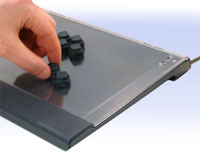

http://www.ergodex.com/mainpage.htm
Check it out. You can setup the keys anyway you want. Do you think this would help with N? No more straining for the jump or kill key. Unfortunatly, the price is a bit high ($149 U.S.), at least for me. But hey, wouldn't that just be awesome?
-Indecisive
Check it out. You can setup the keys anyway you want. Do you think this would help with N? No more straining for the jump or kill key. Unfortunatly, the price is a bit high ($149 U.S.), at least for me. But hey, wouldn't that just be awesome?
-Indecisive


 (let me answer that myself, i have no money)
(let me answer that myself, i have no money)